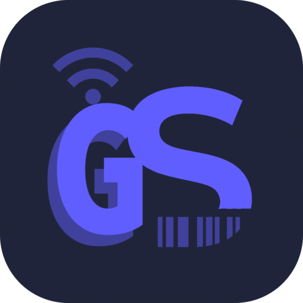

手机扫码，电脑输入
把扫码得到的 Unicode 文本和按键直接输入到 Windows 当前光标位置，支持空格、回车、Tab、组合快捷键、前缀和后缀。
适用于 Windows 10/11 x64。安装版会在需要时安装 WebView2；便携版无需安装，但电脑仍需具备 WebView2。
应用未使用代码签名证书，Windows SmartScreen 可能提示风险。确认下载来源后，可选择“更多信息”→“仍要运行”。
在电脑上打开 Gzw Scanner 并保持运行，窗口中会显示连接二维码。
打开手机扫码端，扫描电脑上的二维码。手机和电脑通常应连接同一个 Wi-Fi。
先点中其他程序里要输入的位置，再扫码。文本和按键会输入到当前光标处。
支持中文、英文、Emoji、重音字符、空格、回车、Tab 和常用组合快捷键。
使用 {{SPACE}}、{{ENTER}}、{{TAB}} 或 {{KEY:Ctrl+V}} 在同一次扫码中混合文本和按键。
为每次扫码添加固定前后缀，并自动发送空格、回车或 Tab。
扫码数据通过加密的 WebRTC 连接在手机和电脑之间直接传输。
接收端可以放到后台运行。先点中目标输入框，再用手机扫码。以管理员权限运行的程序和 Windows 安全界面可能拒绝模拟输入。